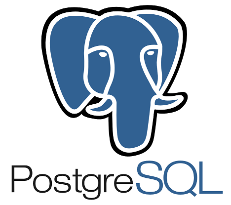
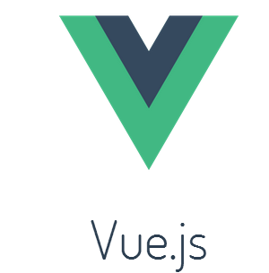

Documentation Nginx

Docker Monitoring : portainer / Swarm-visualizer
Portainer Github Swarm visualizer Github
Login : admin
Docker Tutum Helloworld

Monitoring
Micro Services before API manager

 Hello
Github Java
Githubi Spring
Employer Rest
Employer List
Employer Metrics
Employer Health
Github Java
Github Spring
File
Github Java
Github Spring
Hello
Github Java
Githubi Spring
Employer Rest
Employer List
Employer Metrics
Employer Health
Github Java
Github Spring
File
Github Java
Github Spring
CREATE TABLE employer.employer (
id BIGINT(20) NOT NULL AUTO_INCREMENT,
name VARCHAR(255) NULL DEFAULT NULL,
registrationnumber VARCHAR(255) NULL DEFAULT NULL,
PRIMARY KEY (id)
)
http://file.services.alin.be/archive/upload?registrationNumber=123456&date=2017-01-01 http://file.services.alin.be/archive/documents?registrationNumber=0418.217.577&date=2017-01-01
API Manager
 API Manager Github API Manager Dashboard
http://morpheus.alin.be:7012 Dashboard : http://api.services.alin.be/kong, admin
Api Manager Metrics
Grafana Grafana alert Github Statsd Statsd dashboard
Login : admin Send to Statd 7017 echo "deploys.test.myservice:1|c" | nc -w 1 -u localhost 7017 Datasource : http://morpheus.alin.be:7051
Home-assistant

Vue.js
 Vue.js
Api Manager Metrics
Todo : mail Alert, monitoring